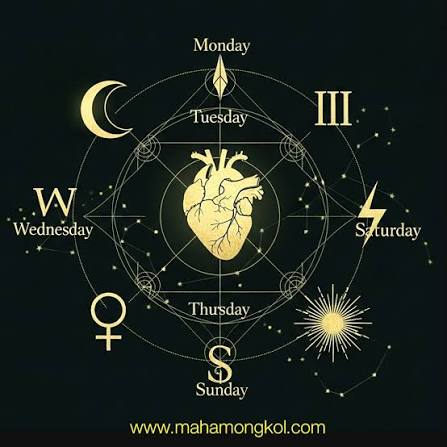

ชะตาวันเกิด

ศาสตร์การทำนายดวงชะตาและวิเคราะห์บุคลิกลักษณะของบุคคลโดยอาศัยวัน เดือน ปี และเวลาเกิดเป็นหลักในการคำนวณและตีความ ซึ่งมีทั้งรูปแบบโหราศาสตร์ไทย โหราศาสตร์ตะวันตก โหราศาสตร์จีน และศาสตร์แห่งตัวเลข โดยมีหลักการสำคัญคือการนำข้อมูล ณ วินาทีแรกที่บุคคลนั้นกำเนิดขึ้นมาบนโลกไปเชื่อมโยงกับตำแหน่งของดวงดาว สัญลักษณ์ราศี หรือพลังงานประจำวันเกิดเพื่อค้นหาตัวตนที่แท้จริง จุดแข็ง จุดอ่อน พฤติกรรม นิสัยใจคอ รวมถึงแนวโน้มโชคชะตาในด้านต่างๆ ไม่ว่าจะเป็นเรื่องการงาน การเงิน ความรัก สุขภาพ และอุปสรรคที่จะต้องพบเจอในแต่ละช่วงวัย โดยดวงชะตาวันเกิดจะแบ่งออกเป็นหลายระดับ ตั้งแต่การดูภาพรวมตามวันในสัปดาห์ เช่น คนเกิดวันจันทร์หรือวันอาทิตย์ การดูตามราศีและธาตุประจำราศี การคำนวณเลขศาสตร์จากผลรวมของวันเดือนปีเกิด ไปจนถึงการผูกดวงชะตาอย่างละเอียดที่ต้องใช้เวลาเกิดและสถานที่เกิดเพื่อคำนวณหาลัคนาและตำแหน่งดาวเคราะห์จริงบนท้องฟ้า ทำให้ดวงชะตาวันเกิดเป็นเหมือนแผนที่ชีวิตพื้นฐานที่ติดตัวทุกคนมาแต่เกิด ซึ่งนอกจากจะช่วยให้ผู้คนเข้าใจตนเองและผู้อื่นได้ดีขึ้นแล้ว ยังเป็นเครื่องมือช่วยเตือนสติในการดำเนินชีวิต ให้รู้จักเตรียมพร้อมรับมือกับช่วงเวลาที่ยากลำบาก และรู้จักคว้าโอกาสในจังหวะชีวิตที่ดีได้อย่างชาญฉลาด